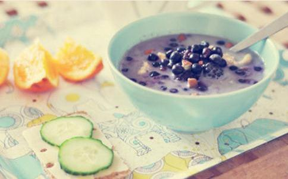

常言道：“秋季进补，冬令打虎”，秋季是收获的季节，可选择的食物种类非常丰富。秋季气温开始降低，雨量减少，空气湿度相对降低，气候偏于干燥。人体也会出现这样那样的不适，所以自古至今，非常注意秋季饮食调理。
四样东西要舍但在物质十分丰富，市场供应充足的今天，顺应季节变化调理饮食的意义远远大于“贴秋膘”。祖国医学认为有“滋阴养肺、润燥生津”功效的食物是秋季饮食的最佳选择，秋天要少吃油腻食物，油腻食物热量高，不易消化，会加重肠胃等消化吸收系统的负担。
秋天天气干燥，人们会出现皮肤干燥、口干舌燥、流鼻血等“上火”症状，这与秋季天气干燥、雨水少有关系。有些朋友天气凉爽以后，胃口大开，喜欢吃辛辣食物，无辣不欢，但刺激性食物会使皮肤血液循环加快，身体发热过多流汗也会导致人体水分散发，加重“上火症状。
有些朋友延续夏季的饮食习惯，秋季免不了吃冷饮和饮料，其实秋季吃冷食，不但会影响对食物中营养物质的吸收和消化，还可能导致消化功能紊乱、营养缺乏和经常性腹痛，对女性朋友，特别是体质本身就易偏寒的女孩，容易出现生理期腹痛等症状。
秋季天高云淡，有接近中秋和国庆节，人们聚会多了起来，喝酒在所难免，90%的酒需要在肝脏代谢，喝多的酒精只能堆在肝脏，产生很多过氧化物，伤肝。所有说喝酒是肝在喝而不是嘴再喝。酒精肝、酒精中毒、酒精性脂肪肝、酒精性肝硬化，都与酒有关。
五样东西要入“秋燥”的主要原因是空气过于干燥，身体容易缺水。中医认为秋燥耗伤阴津，导致皮肤干燥。按照营养学会推荐，正常人群除三餐食用的汤汤水水外，每天需要补水1500毫升~1700毫升，每天主动饮用适量的水，对改善血液循环、防治心血管疾病大有裨益。
秋天坚持每天清晨起床后喝一大杯温开水，其他时间不定时的主动喝水。最好不要等到口渴的时候再喝水，要主动及时喝，感到口渴是身体已经缺水的信号。
秋季特别适合食粥，食粥可和中、益胃、生津。中医认为：“晨起食粥，推陈出新，利膈养胃，生津液，令人一日清爽，所补不小"。
煮粥可谓食材丰富多彩，
推荐
南瓜含有丰富的类胡罗卜素，在体内可以转化为营养元素维生素A，帮助维护我们的眼睛
南瓜里面含有较丰富的钙、钾、铁等矿物质元素，很适合中老年人以及高血压患者食用的，可以帮助我们人体起到预防骨质疏松的好处的。南瓜所含果胶对胃胶道粘膜有保护作用。
银耳既有补脾开胃的功效，又有益气清肠、滋阴润肺的作用。非常适合夏季食用。小米非常适合煮粥，值得一提的是，一般谷物不含有
秋季适宜多吃滋润食物，多吃新鲜蔬菜水果。蔬菜水果富含维生素、膳食纤维和胡萝卜素、
另外秋天宜吃清热生津、养阴润肺的食物来防干燥的气候对人体的影响，如百合、梨、莲子、等清补柔润之品。
越来越多的研究显示抗氧化是预防衰老的重要步骤，因为自由基或氧化剂会将细胞和组织分解，影响代谢功能，并会引起不同的健康问题。如果能够消除过多的氧化自由基，对于许多自由基引起的及老化相关疾病都能够预防。例如常见的癌症、动脉硬化、糖尿病、白内障、心血管病、老年痴呆、关节炎等，这些疾病都被认为与自由基相关。
应摄取足够的天然抗氧化剂，延缓身体退化速度，防止肌肤衰老， 并时刻保持青春神采。抗氧化剂能在自然饮食中找到，是被称为三大抗氧化物质的维生素E、维生素C、和β-胡萝卜素。它们可以利用自身结构的特性来稳定自由基多余的电子，防止对细胞造成老化，而维护身体健康。常见食物来源：
在经历了炎夏的闷热后，秋季的凉爽让人们感觉格外舒适，正是户外运动的大好时机。我国自古就有“重阳登高”的传统。秋令时节，坚持适宜的体育锻炼，不仅可以调心养肺，提高内脏器官的功能，而且有利于增强各组织器官的免疫功能和身体对外界即将到来寒冷刺激的抵御能力。由于秋季早晚温差大，气候干燥，秋季运动要注意增减衣服和多饮食。